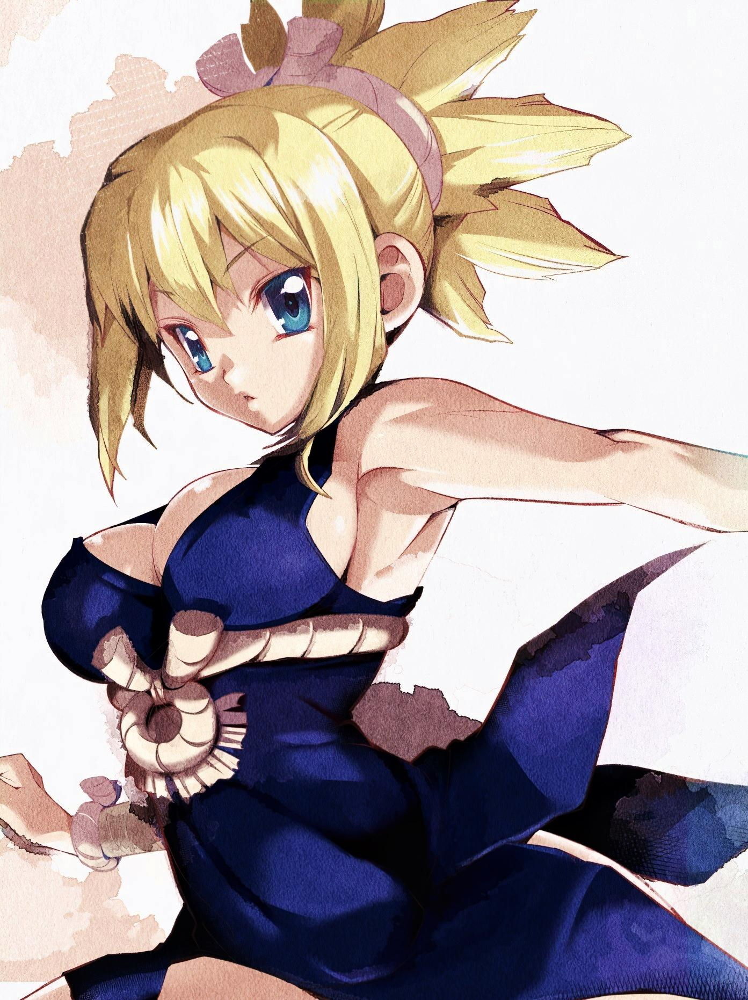

Dr. STONE tendrá un nuevo capítulo con una historia posterior al final
Una filtración reveló que el manga escrito por Riichiro Inagaki e ilustrado por Boichi, Dr. STONE, tendrá un capítulo adicional que se publicará en la edición del próximo 4 de julio de la revista Weekly Shonen Jump. El capítulo en cuestión contará con un total de cincuenta y un páginas y celebrará el estreno del episodio especial Dr. STONE: Ryuusui, contando una historia que se desarrolla “un poco después del final” de la franquicia literaria.
Inagaki y Boichi comenzaron la publicación del manga en la revista Weekly Shonen Jump de la editorial Shueisha en marzo de 2017 y la finalizaron en marzo de 2022. La obra inspiró una adaptación al anime de veinticuatro episodios producida por los estudios TMS Entertainment, bajo la dirección de Shinya Iino y guiones escritos por Yuichiro Kido, estrenada en julio de 2019. Una segunda temporada de once episodios se estrenó en enero de 2021, confirmando al final de su emisión una tercera temporada para el año 2023 y un especial para la temporada de Verano-2022 (Julio-Septiembre).
Sinopsis de Dr. STONE
Después de cinco años de albergar sentimientos no expresados, el estudiante de preparatoria Taiju Ooki finalmente está listo para confesar su amor a Yuzuriha Ogawa. Sin embargo, justo cuando Taiju comienza su confesión, una luz verde cegadora golpea la Tierra y petrifica a la humanidad en todo el mundo, convirtiendo a cada ser humano en piedra. Varios milenios después, Taiju se despierta para encontrar el mundo moderno completamente inexistente, ya que la naturaleza ha florecido en los años en que la humanidad se detuvo.
Entre un mundo de piedra de estatuas, Taiju se encuentra con otro ser humano vivo: su amigo Senkuu, amante de la ciencia, que ha estado activo durante unos meses. Taiju se entera de que Senkuu ha desarrollado un gran plan: lanzar el renacimiento completo de la civilización con la ciencia. La fuerza de Taiju y el cerebro de Senkuu se combinan para forjar una asociación formidable, y pronto descubren un método para revivir a los petrificados. Sin embargo, el plan maestro de Senkuu se ve amenazado cuando sus ideologías son desafiadas por aquellos que despiertan. Mientras tanto, se desconoce la razón de la petrificación de la humanidad.